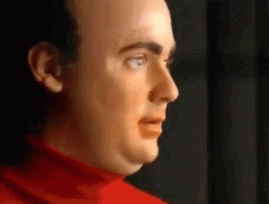

Saved Links
Classics
Lemon courgette Risotto
Creamy mushroon pasta
Buckwheat Pancakes
Aubergine tomato Rogan Josh
Pasta Alla Norma
Moussaka
Spaghett!!

Low FODMAP
Beef stew
Red Pepper Pasta
Carrot and Fennel Soup
Back